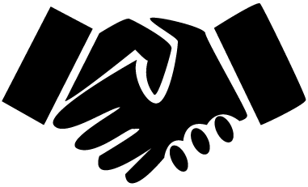

Velkommen
til Chin-Gu
Chin Gu betyder venner på koreansk. Navnet stammer tilbage til klubbens første medlemmer og har altid beskrevet fællesskabet og ånden i klubben. Hos Chin-Gu full contact tilbyder vi træning i kickboxing - herunder light contact, full contact, lowkick, MuayThai & K1-rules

Kickboxing
som kampsport
Chin-Gu og Full contact er en udløber af karate og blev udviklet i 1960´erne i USA. Kickboxing trækker på bokse- teknikker og kombinere det med sparketeknikker, der kendes fra karate. Da det er i fuld kontakt, behøver man også udstyr såsom handsker, hjelm, skridt og tand- beskyttelse.
Mød
trænerteamet

Chin Gus
Værdier
Chin-Gu Full Contact er en kampsportsklub, der vægter kampsportens værdier og filosofi højt.
Sammenhold
I klubben er der plads til alle & alle hjælper og støtter hinanden.
Respekt
Alle respekterer hinanden, træneren såvel som klubben.
God sportsånd
Alle har en god sportsånd & er en god sportsmand.
Man er en god rollemodel og repræssentant for klubben.
Viljestyrke
Man kommer til tiden, omklædt og klar til træningen